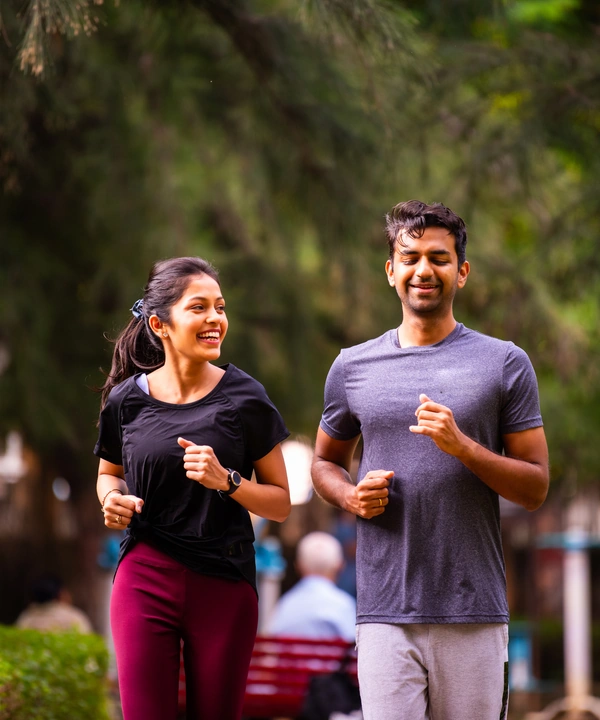

Run Your City. Own the Block.
Every run and walk counts. Run a loop around your streets and that area becomes yours on the map.
Free · Works with Strava and your watch · Made in India
Run a Loop. Claim the Ground.
Your city map is split into small hexagon tiles. Close a loop on foot and every tile inside turns your colour.

Start a run
Open the app and run, jog or walk anywhere in your city.

Close the loop
Finish where you started. Bigger loops claim more ground.

It's yours
The area inside is yours, until someone runs a bigger loop.
Your Squad. Your Streets.
Make a team with friends, your run club or office. Claim areas together and defend them from other teams.

City Runs. Mountain Gains.
Every hill and staircase in your city adds up. Climb the height of a real Himalayan peak, then go do it for real.
Find Your Next Race.
Indian races in one calendar. Preview the course in 3D and train with a plan made for it.
| Date | Race | City | Distance |
|---|---|---|---|
| The race calendar opens with the app. Race partners can reach us through the Crew page. | |||
A Plan for Every Goal.
First 5K
From zero to a 5K in 8 weeks.
10K and half marathon
Build speed and distance.
Full marathon
A full race-ready plan.
Trek-ready
Train in your city for a Himalayan trek.
Every Kilometre Pays You Back.
Real runs earn points. Spend them on shoes, gear, race entries and trek discounts.

Car Loops? That's Not It.
Only real running and walking counts. Every activity is checked automatically. Activities in a car, on a bike or with fake GPS earn nothing, and repeat cheaters are removed from leaderboards.
Speed check
Step rhythm
GPS jumps
Daily limits
Keep Your Watch. Bring Your Runs.
Import your runs automatically. No need to switch anything.
Quick Questions.
Do I need to be a fast runner?
No. Walking counts too. Slow loops claim ground just like fast ones.
Is my home location shown?
No. Your live location is never public, and share cards never show your home or start point.
Which cities can I play in?
Treqz Run starts with the big Indian cities. Join early access and tell us yours.
Is it free?
Yes. An optional Pro plan adds extras.
Running guides
Plans, shoes, heat, air quality and races, written for runners in India.
What is territory running? How GPS turf games work
How GPS territory running games work: claim map area by running loops. Why people like them, the privacy risks, and what Treqz Run plans.
Strava alternatives for India: who each one suits
Looking beyond Strava? Compare Garmin Connect, Polar Flow, ASICS Runkeeper, Nike Run Club, adidas Running and komoot on privacy, cost, watches and clubs.
Run clubs in Pune: where they meet and how to join
A checked list of Pune run clubs with where and when they say they meet, how they work, places to run and what to ask before joining.
Run clubs in Mumbai: where they meet and how to join
A checked list of Mumbai run clubs and crews with where they meet, how they work, popular promenades to run on and what to ask before joining.
Run clubs in Hyderabad: where they meet and how to join
A checked list of Hyderabad run clubs with where they meet, how they work, places clubs run and what to ask before you join one.
Run clubs in Delhi NCR: Delhi, Gurugram and Noida
A checked list of run clubs in Delhi, Gurugram and Noida with where they meet, how they work, parks to run in and what to ask before you join.

Your City Is Waiting.
Be first to run Treqz in your city when it launches.